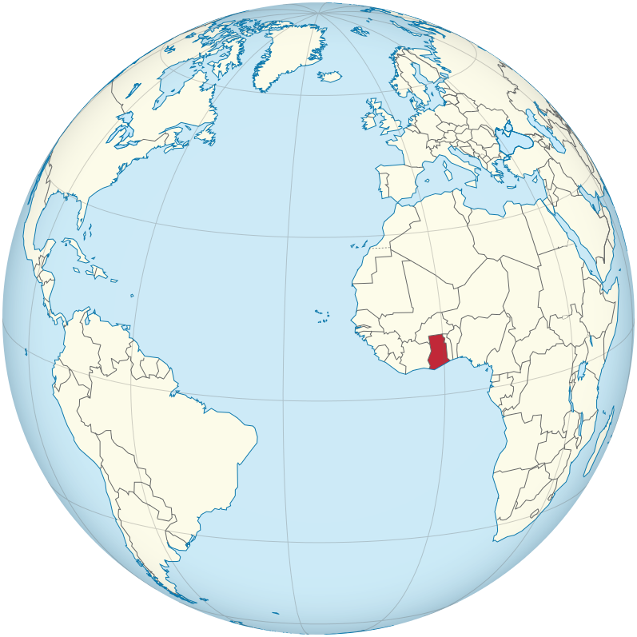
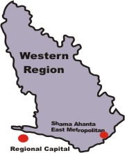

BASIC INFORMATION ABOUT TAKORADI-GHANA
Takoradi, also known as the oil city is a city in Ghana West Africa. Takoradi is a port city and has timber, energy, and technology industries. Over the years it has attracted a good number of investors, including miners, as the city is close to the mining towns in the western part of Ghana. The chief industries in Takoradi are timber, plywood, shipbuilding and railway repair, and recently, sweet crude oil and crude oil.
Population: 232,919
Latitude/Longitude: N 4° 53' 0.00" W 1° 45' 0.00" (4.88333, -1.75000)
Avg. Elevation (DEM): 22 m (72 ft)
Time Zone: Africa/Accra UTC/GMT
NEAREST PLACES WITHIN 100 KM OF TAKORADI, GHANA
New Takoradi (2.7 Km)
Sekondi (6.9 Km)
Amanful (4.1 Km)
Efia Nkwanta (4.1 Km)
Kwesimintim (5.4 Km)
Ekuasi (5.8 Km)
Anaji (6.2 Km)
Funko (4.8 Km)
PRODUCTS AND SERVICES IN TAKORADI, GHANA
Eating and drinking establishments
Gold Au
Oils
Securities and commodities markets services
SOME COMPANIES IN TAKORADI, GHANA
Benso Oil Palm Plantation Limited
Carmeuse Ghana
Gold Coast Resources, Inc.
Takoradi Renewable Energy Ltd
Carmeuse Lime Products
Cocoa Processing Company Limited
Sekondi-Takoradi District Chamber of Commerce
Tullow OIL
further information can be found here
Photos of TAKORADI-GHANA can be found here 
Things to see in TAKORADI-GHANA can be access from this link
Maps link 
 Facebook
Facebook LinkedIn
LinkedIn Viber
Viber Whatsapp
Whatsapp